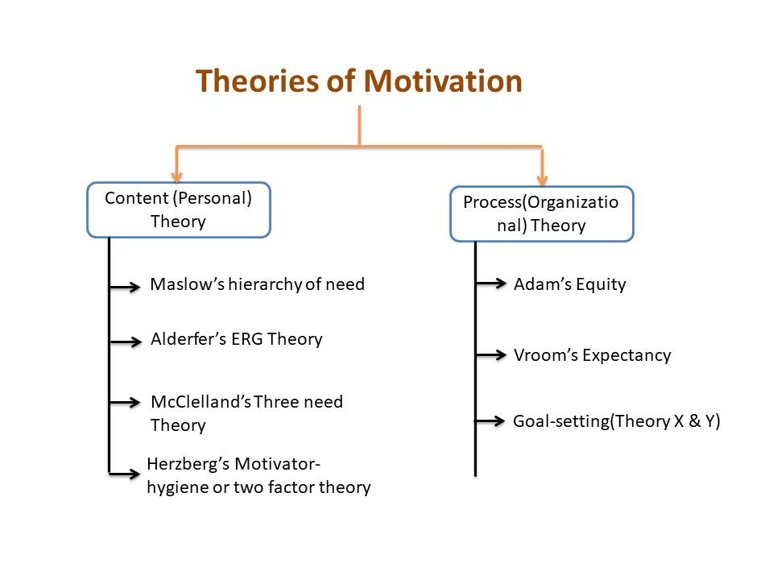
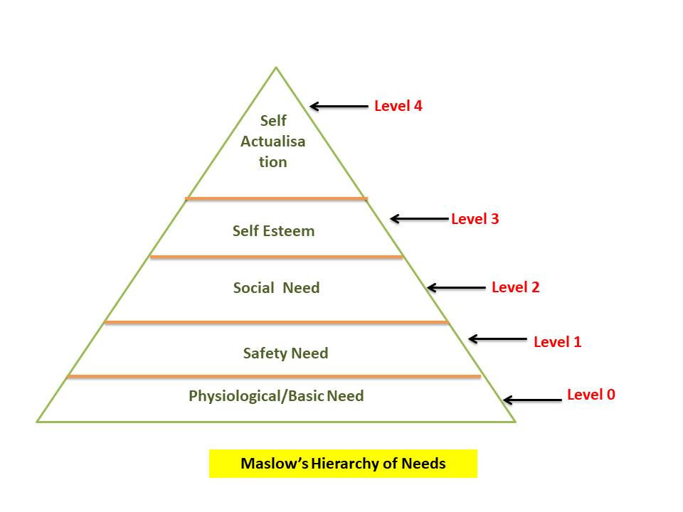
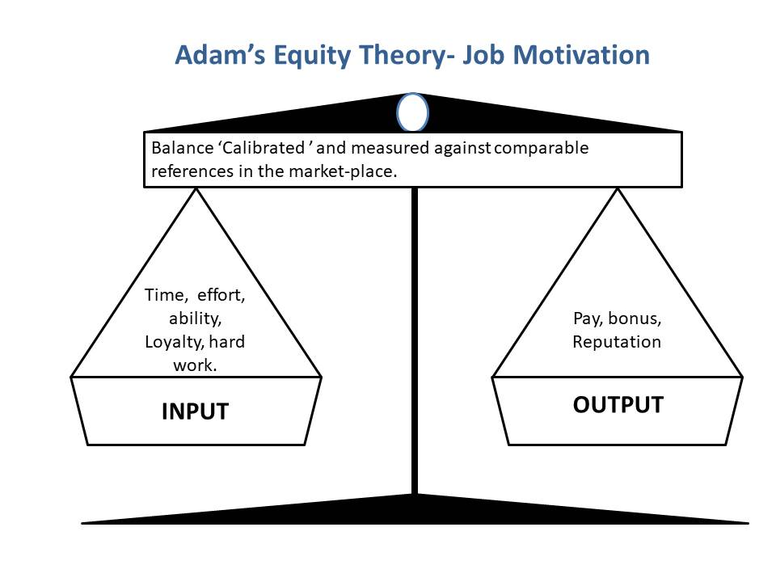
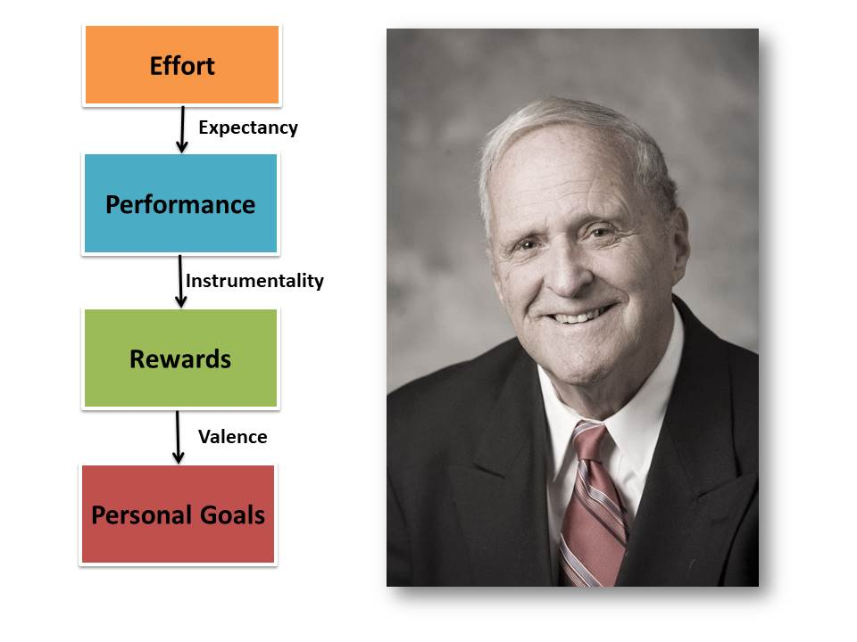
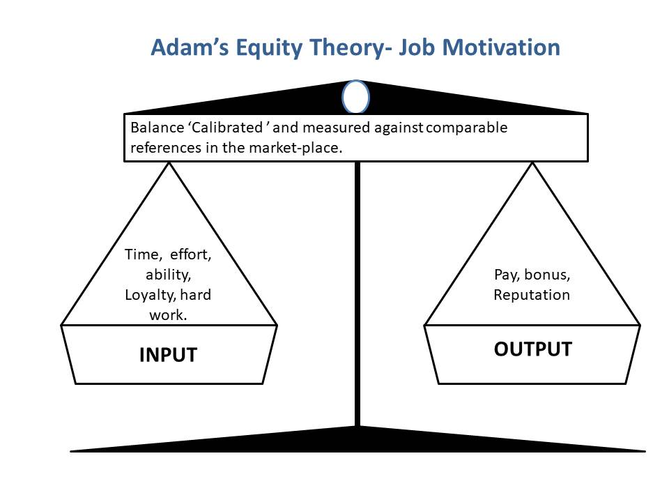

Motivation
The term motivation has been derived from latin word "mover"or "motive" which means "to move".
Motive can be defined as an inner state that energizes, activates or move to direct or channelizes behaviour towards goals.
According to Michael J.Jucius :- " Motivation is an act of stimulating someone or one self to get desired cource of action, to push the right button to get desired reaction." In simple words Motivation can be defined as Willingness towards the accomplishment of a goals or need.
| Table Of Content |
|---|
Nature of Motivation
- Based on Motives : Motivation is based on individual motives which are internal to the individual. Motives provides activating thrust towards reaching a goal that comes from the feeling when individual lack something.
- Motivation is a psychological phenomenon : The process of motivation is mainly concerned with needs, desires, expectation, confidence, satisfaction that are psychological phenomenon. The psychological make up of every individual is different from others therefore it is very difficult to find out what can motivate the person towards desired goals.
- Goal Oriented process : Motives are directed towards goals. Motivation has great deal of influence on the human behaviour.
- Motivation Cannot be easily Observed : It is not actually possible to make direct observation of motivation can be observed interactions which constitute thier behaviour in terms of underlying motives and satisfaction.
- Dynamic and Situational : The motives, goals, behaviour are all dynamic in nature. The needs, drives, expection of person keep changing with the time; therefore motivation is a dynamic process.
- Motivation us related to satisfaction : Whenever a particular needs of individual is fulfilled he feels extremely satisfied. The satisfaction is associated result of award as publishment which are based on past experiences.
- Person is motivated in totality : All individual in the organisation have various goals and thier needs are interrelated.
Importance of Motivation
- High Performance Level : Motivated employee put higher performance as compared to others employees. Better performance will also result higher productivity.
- Low Employee turnover and absentecism : Motivated employee stay in the organisation and their absentecism is quite low. High turnover and absentecism create many problem in the organisation.
- Acceptability to change : Organisation are created in the society because of the changes in the society changes in technology, value system etc.
- Better Organisational Image : Those enterprises which offer better monetary and non-monetary facilites to their employees have a better image among them.
- Better Industrial relations : A good motivational system will create job satisfaction among employees. the employment will offer employees better services condition and various other incentives.
Theories of Motivation

Content Theories
-
Maslow's Hierarchy of Need (Abraham Maslow)
- Maslow's theory assumes that a person attempts to satisfy the more basic needs before directing behaviour towards satisfying upper level needs.
- Lower order needs must be satisfied before a higher order need begins to control a person's behaviour.
- A satisfied need cases to motivate.

- Physiological Needs : Physiological Needs are those required to sustain life. such as: Air, Water, Cloth, Food
- Safety Needs : Once Physiological needs are met One's attention turns to safety and security in order to be free from the threat of physical and emotional harm. such needs might be fulfilled by : Living in a safe area, Medical insurance, Job Security & Financial reserves.
- Social Needs : Once a person has met the lower level Physiological and safety needs, higher level needs awaken. The first level of higher level needs are social needs.
Social needs are those related to interaction with others and may include: Friendship, Belonging to a group, Giving and receiving love
- Esteem Needs : Once a person feels a sense of "belonging", the need to feel important arises. Esteem needs may be classified as internal or external.
Internal esteem needs are these related to self esteem such as self respect and achievement.
External esteem needs are those such as social status and recognition. some esteem needs are : self respect, Achievement, Attention, Recognition & Reputation.
- Self-Actualisation : self actualization is the summit of Maslow's hierarchy of needs. It is the quest of reaching one's full potential as a person.
Self actualized people tend to have needs such as: Truth, Justice, Wisdom, Meaning.
-
Herzerberg Two's Factor theory (Frederick Herzberg)
Two factor theory states that there are certain factors in the workplace that cause job satisfaction, while a separate set of factors cause dissatisfaction.
Assumption:
- Being satisfied with one's job is equivalent to being motivated; "a satisfied worker is a motivated worker."
- Job satisfaction and dissatisfaction are separate concepts with unique determinants based on work with accountants and engineers.

- Hygiene Factor : Hygiene factors are those factors which are essential for existence of motivation at work place. These do not lead to positive satisfaction for long-term. But if these factors are absent/ if these factors are non-existant at workplace. Then they lead to dissatisfaction.
- Pay Benefit
- Working Condition
- Job Security
- Quality of Supervision
- Relationship with co-workers.
- Company Policy
- Motivation Factor : Acc. to Herzberg, the hygiene factor cannot be regraded as motivator. The motivational factors yield postive satisfaction these factor are inherent to work. These factors motivate the employee for a superior performance.
- Work itself responsity
- recognition
- Achievement
- Advancement
- Promotion
- Personal Growth
Alderfer's ERG Theory (Alderfer's)
The three components identified by alderfer(1972) drew upon Maslow's theory. But also suggest that individuals were motivated to move forward and backward through the levels in terms of motivators.
- Existence Need: This related to Maslow's first two needs thus combining the physiological and safety needs into one level.
- Relatedness Need : Encomposs Social and external esteem; relations hips with significant others like family, friends, co-workers and employers. This also means to be recognized and feel secure as part of a group or family.
- Growth Need : Internal esteem and self-actualization ; these impel a person to make creative or productive effects on himself and the Environment. This includes desires to creative and productive and to complete meaningful tasks.
-
McClelland's Acquired Needs Theory
The idea here is that needs are acquired throughout life. This theory focuses on three types of needs:
- Need of Achievement : Desired for success and for attaining goal.
- Need of Afflication : Focuses on desire for relationship.
- Need of Power : Desire for responsibility and authority of others.
Process Theories
-
Adams Equity Theory
Which proposes that individuals are motivated when they perceive that they are treated equitably in comparison to others within the orgnization(Adams,1963).
Adam's Equity theory of motivation says that the relationship between an individuals, input(contribution) and their benefits(rewards) is important for their sence of fairness and equity thus for their motivation.

- Input: Inputs can thought of as the things that an individual does to help an individual an organization achieve a goal. These the things that the Individual contribute the Oraganization.
- Output: Benefits are the things that an individual receives as a result of helping an Organization achieve a goal. These are thing that the individual receive from the Organization.
-
Vroom's Expectancy Theory of Motivation (Victor Vroom)
"A person will be motivated to put forth a higher level of effort if they believe their efforts will result is higher performance and thus, better rewards."
Elements of Expectancy Theory
- Expectancy : The level of Effort on employee is willing to expert in hopes that the increased effort will result in better performance.
- Instrumentality : The belief that if you perform well, then a valued outcome will be received.
- Valence : The important that the individual places upon the expected outcome.
Motivational Factor(MF) = Expectancy X Instrumentality X Valence

Theory X and Theory Y (Douglas McGregor)
- Douglas Mcgregor wrote the book "The human side of enterprise" in 1960.
- He examined individuals behavior at work.
- From this he formulated two models of management based on hierarchy into lower order needs (Theory X) and higher order need(Theory Y).
- It Concludes dual aspect of human beings.
- He suggested that management could use either set of needs to motivate.
- Theory X : Thoery X assumes that employees are naturally unmotivated and dislike working and his encourages an Authoritarian style of management.
Characteristics :
- Does not Participate
- Demands never asks
- Short temper
- Does not team build
- Poor Listener
- Theory Y : Theory Y shows a participate style of management that is decentralized. It assumes that employees are happy to work, self motivated, creative and enjoy working with greater responsability.
Characteristics
- Self Motivated
- Responsible
- always Participates
- Promotion
- Good Listener
- Give rewards and feedback
- Happy and Active
Features
Theory X (0%)
Theory Y (100%)
Attitude
People dislike work, find it boring, and will avoid it if they can.
People need to work and want to take an interest in it. Under right conditions, they can enjoy it.
Direction
People must be forced or brided to make the right effort.
People will direct themselves towards a target that they accept.
Responsibility
People would rather be directed than accept resposibility, which they avoid.
People will seek and accept responsibility, under the right conditions.
Motivation
People are motivated mainly by money and fears about their job security.
Under the right conditions, people are motivated by the desire to realize their own potential.
Creativity
Most people have little creativity- except when it comes to getting round rules.
Creativity and ingenuity are widely distributed and grossly underused.
Content Theories
-
Maslow's Hierarchy of Need (Abraham Maslow)
- Maslow's theory assumes that a person attempts to satisfy the more basic needs before directing behaviour towards satisfying upper level needs.
- Lower order needs must be satisfied before a higher order need begins to control a person's behaviour.
- A satisfied need cases to motivate.
- Physiological Needs : Physiological Needs are those required to sustain life. such as: Air, Water, Cloth, Food
- Safety Needs : Once Physiological needs are met One's attention turns to safety and security in order to be free from the threat of physical and emotional harm. such needs might be fulfilled by : Living in a safe area, Medical insurance, Job Security & Financial reserves.
- Social Needs : Once a person has met the lower level Physiological and safety needs, higher level needs awaken. The first level of higher level needs are social needs.
Social needs are those related to interaction with others and may include: Friendship, Belonging to a group, Giving and receiving love - Esteem Needs : Once a person feels a sense of "belonging", the need to feel important arises. Esteem needs may be classified as internal or external.
Internal esteem needs are these related to self esteem such as self respect and achievement.
External esteem needs are those such as social status and recognition. some esteem needs are : self respect, Achievement, Attention, Recognition & Reputation. - Self-Actualisation : self actualization is the summit of Maslow's hierarchy of needs. It is the quest of reaching one's full potential as a person.
Self actualized people tend to have needs such as: Truth, Justice, Wisdom, Meaning. -
Herzerberg Two's Factor theory (Frederick Herzberg)
Two factor theory states that there are certain factors in the workplace that cause job satisfaction, while a separate set of factors cause dissatisfaction.Assumption:
- Being satisfied with one's job is equivalent to being motivated; "a satisfied worker is a motivated worker."
- Job satisfaction and dissatisfaction are separate concepts with unique determinants based on work with accountants and engineers.
- Hygiene Factor : Hygiene factors are those factors which are essential for existence of motivation at work place. These do not lead to positive satisfaction for long-term. But if these factors are absent/ if these factors are non-existant at workplace. Then they lead to dissatisfaction.
- Pay Benefit
- Working Condition
- Job Security
- Quality of Supervision
- Relationship with co-workers.
- Company Policy
- Motivation Factor : Acc. to Herzberg, the hygiene factor cannot be regraded as motivator. The motivational factors yield postive satisfaction these factor are inherent to work. These factors motivate the employee for a superior performance.
- Work itself responsity
- recognition
- Achievement
- Advancement
- Promotion
- Personal Growth
Alderfer's ERG Theory (Alderfer's)
The three components identified by alderfer(1972) drew upon Maslow's theory. But also suggest that individuals were motivated to move forward and backward through the levels in terms of motivators.- Existence Need: This related to Maslow's first two needs thus combining the physiological and safety needs into one level.
- Relatedness Need : Encomposs Social and external esteem; relations hips with significant others like family, friends, co-workers and employers. This also means to be recognized and feel secure as part of a group or family.
- Growth Need : Internal esteem and self-actualization ; these impel a person to make creative or productive effects on himself and the Environment. This includes desires to creative and productive and to complete meaningful tasks.
-
McClelland's Acquired Needs Theory
The idea here is that needs are acquired throughout life. This theory focuses on three types of needs:- Need of Achievement : Desired for success and for attaining goal.
- Need of Afflication : Focuses on desire for relationship.
- Need of Power : Desire for responsibility and authority of others.
-
Adams Equity Theory
Which proposes that individuals are motivated when they perceive that they are treated equitably in comparison to others within the orgnization(Adams,1963).
Adam's Equity theory of motivation says that the relationship between an individuals, input(contribution) and their benefits(rewards) is important for their sence of fairness and equity thus for their motivation.
 - Input: Inputs can thought of as the things that an individual does to help an individual an organization achieve a goal. These the things that the Individual contribute the Oraganization.
- Output: Benefits are the things that an individual receives as a result of helping an Organization achieve a goal. These are thing that the individual receive from the Organization.
-
Vroom's Expectancy Theory of Motivation (Victor Vroom)
- Expectancy : The level of Effort on employee is willing to expert in hopes that the increased effort will result in better performance.
- Instrumentality : The belief that if you perform well, then a valued outcome will be received.
- Valence : The important that the individual places upon the expected outcome.
Theory X and Theory Y (Douglas McGregor)
- Douglas Mcgregor wrote the book "The human side of enterprise" in 1960.
- He examined individuals behavior at work.
- From this he formulated two models of management based on hierarchy into lower order needs (Theory X) and higher order need(Theory Y).
- It Concludes dual aspect of human beings.
- He suggested that management could use either set of needs to motivate.
- Theory X : Thoery X assumes that employees are naturally unmotivated and dislike working and his encourages an Authoritarian style of management.
Characteristics :- Does not Participate
- Demands never asks
- Short temper
- Does not team build
- Poor Listener
- Theory Y : Theory Y shows a participate style of management that is decentralized. It assumes that employees are happy to work, self motivated, creative and enjoy working with greater responsability.
Characteristics- Self Motivated
- Responsible
- always Participates
- Promotion
- Good Listener
- Give rewards and feedback
- Happy and Active
Process Theories
"A person will be motivated to put forth a higher level of effort if they believe their efforts will result is higher performance and thus, better rewards."
Elements of Expectancy Theory
Motivational Factor(MF) = Expectancy X Instrumentality X Valence
| Features | Theory X (0%) | Theory Y (100%) |
|---|---|---|
| Attitude | People dislike work, find it boring, and will avoid it if they can. | People need to work and want to take an interest in it. Under right conditions, they can enjoy it. |
| Direction | People must be forced or brided to make the right effort. | People will direct themselves towards a target that they accept. |
| Responsibility | People would rather be directed than accept resposibility, which they avoid. | People will seek and accept responsibility, under the right conditions. |
| Motivation | People are motivated mainly by money and fears about their job security. | Under the right conditions, people are motivated by the desire to realize their own potential. |
| Creativity | Most people have little creativity- except when it comes to getting round rules. | Creativity and ingenuity are widely distributed and grossly underused. |
Process of Motivation
The process of motivation is based on human needs. The steps of the process of motivation are as follows :

- Unsatisfied Need : Need is the starting point of motivation. The process always begins when a person feels that there is some unsatisfied need in him.
- Tension : When an unsatisfied need is recognised, a tension is created in the mind of the person.
- Drive : This tension stimulates the drive and compels the person to take action to fulfill his needs.
- Search Behaviour : In this, the drives create a drive to search for different ways or alternatives to relieve the tension.
- Satisified need : After searching the various options available, the person chooses a particular option. the person evaluates wheater his need is satisfied or not as per the choser option.
- Reduction of tension : Tension is reduced and the person feels motivated when he is successful in satisfying his need.
Method of Motivation
- Financial Motivation : Financial motivators may be in the form of more wages and salaries, bonuses, profit-sharing with pay medical reimbursements.
- Non-Financial Motivator : These motivators are in the nature of better status, recognition, participation, job security etc.
Principle of Motivation
- Participation
- Getting idea and understanding of subordient.
- Inspirring Employee
- Effective Communication
- Creating team spirit of work.
- Delegation of Authority
- Motivating Superior
- Job Enrichment(Reward, satisfaction)
- Organisation climate
- Recognition